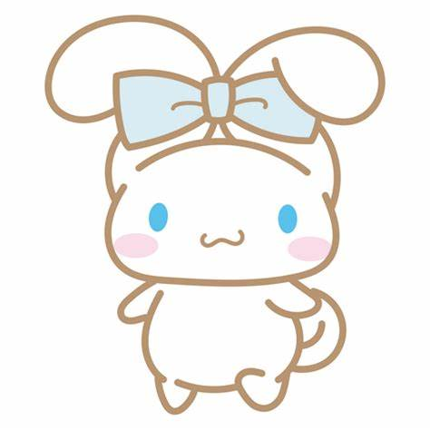

Cinnamoroll (シナモロール Shinamorōru), or otherwise referred to his real name as Cinnamon (シナモン Shinamon), is a Sanrio character and the main protagonist of the Cinnamoroll universe. He was born on March 6, on a cloud far up in the sky. Cinnamoroll is a small and chubby dog with white fur, blue eyes, pink cheeks, a plump and curly tail that resembles a cinnamon roll (hence his name), and long and thick ears that enable him to fly. Cinnamon is shy but pure-hearted, and always willing to help out his friends when they need it. He works at Café Cinnamon, and sometimes sleeps on customers laps. His favorite food is, ironically enough, warm, fresh cinnamon rolls. Cinnamoroll was created in 2001 and made his first appearance the following year.
Links are Inline elements, so they fit side-by-side 